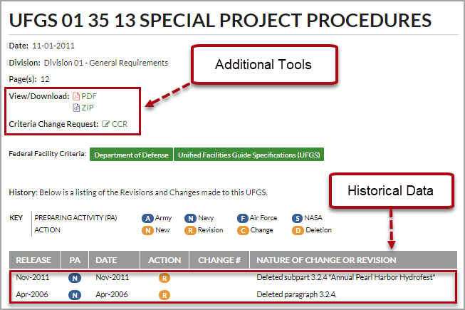
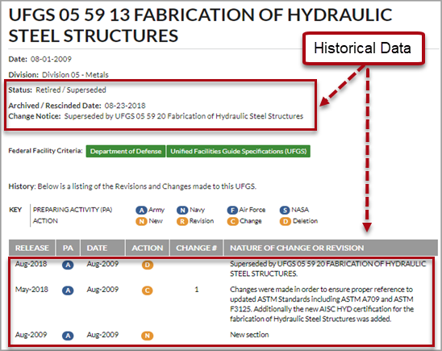

This command can also be executed from the SpecsIntact Explorer's Right-click menu.
The Change/Revision History page, hosted and managed by the National Institute of Building Sciences, Whole Building Design Guide (WBDG), serves as an essential resource for tracking the historical modifications to the selected UFGS Master Section.
This dedicated platform enables users to view key details about a specification Section, including its publication date, assigned Division affiliation, and page count. Additionally, you have the flexibility to view or download the Section in PDF or compressed (.zip) format. The system also allows you to submit a Criteria Change Request (CCR) and review information about its affiliated release, the agency assigned to it, and its current status. For in-depth analysis, you can review comprehensive current and historical revisions and changes to the UFGS Master Section, with sorting options by release, Division, or specific Section.
 If the Section source did not originate from the UFGS Master, you will be directed to the primary UFGS Changes/Revisions page. Other sources include Sections that were acquired from a specific District/Region or a Section that was developed in-house for a specific project. Refer to the SpecsIntact Website Master page for a breakdown of the 5th Level Designations for the UFGS Master, U.S. Army Corps of Engineers - Districts, and the Naval Facilities Engineering Command (NAVFAC) Regional Specifications.
If the Section source did not originate from the UFGS Master, you will be directed to the primary UFGS Changes/Revisions page. Other sources include Sections that were acquired from a specific District/Region or a Section that was developed in-house for a specific project. Refer to the SpecsIntact Website Master page for a breakdown of the 5th Level Designations for the UFGS Master, U.S. Army Corps of Engineers - Districts, and the Naval Facilities Engineering Command (NAVFAC) Regional Specifications.
 Active UFGS Section:
Active UFGS Section:

 Inactive - Retired / Superseded UFGS Section:
Inactive - Retired / Superseded UFGS Section:

Users are encouraged to visit the SpecsIntact Website's Support & Help Center for access to all of our User Tools, including Web-Based Help (containing Troubleshooting, Frequently Asked Questions (FAQs), Technical Notes, and Known Problems), eLearning Modules (video tutorials), and printable Guides.
| CONTACT US: | ||
| 256.895.5505 | ||
| SpecsIntact@usace.army.mil | ||
| SpecsIntact.wbdg.org | ||